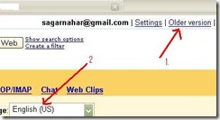

Go "Invisible" in Gmail, Like Yahoo Messenger !
क्या आप भी जीमेल में कईयों की तरह मेल चैक करने आते हैं और आपके ओनलाईन होते ही मित्रों से चैट करने को मजबूर हो जाते हैं? क्या आप याहू मेसेन्जर की तरह इनविजिबल रहकर अपने किसी मित्र से चैट करना चाहते हैं?
आईये!!! इसका इलाज हमारे नितिन बागला जी ने खोज निकाला है और मुझे बताया है मैं आप सबको बता रहा हूँ।
सबसे पहले जाँच लीजिये कि आपने जीमेल का नया वर्जन प्रयोग कर रहे हैं। अब Setting में जाकर भाषा में English US पसन्द कर लीजिये

और अब इसे सेव कर लीजिये।

Invisible पर क्लिक करिये... देखिये आप औरों के लिये अदृश्य हो चुके हैं। देखिये चित्र क्रमांक ३


जीमेल में इस तरीके से Invisible रहते हुए अगर जीटॉक लोगिन किया जाये तो यह संदेश मिलता है Oops! You are not invisible because you're also using desktop software that doesn't support invisibility, such as Google Talk.
पुन्श्च: यह प्रयोग इन्टरनेट एक्स्प्लोरर 7 या फायरफॉक्स 2+ में ही काम करेगा।